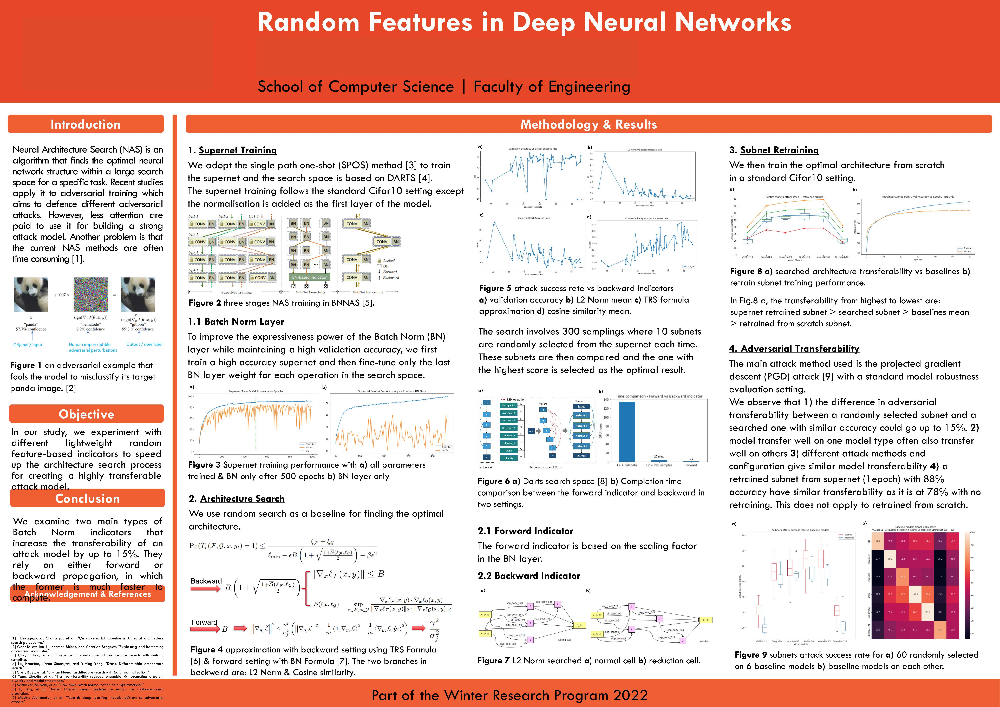

NAS#
Nerual architecture search. Given a supernet, search for a neural net that can attack other networks easily.
Steps:
Create a supernet that contains network modules with high attack transferability (adapt darts search space to SPOS)
change the search module of SPOS (single path one shot NAS), where before it is based on validation acc and now it is the lightweight batch norm value
Obtain searched architecture and retrain the attack model
Use existing adversial attack package e.g. torchattacks to generate adv examples and attack base models (resnet, vgg, etc)

Some code#
import numpy as np
import torch
from super_model import Network, OnePath
import utils
import torchvision
class Args:
def __init__(self) -> None:
self.cutout = False
self.cutout_length = 16
##################### weight matrix for bn #####################
class ScoreConfig:
def __init__(self, args) -> None:
self.n_layers = 8
self.n_mixops = 14
self.n_ops = 8
self.init_channels = 16
self.classes = 10
self.logging = args.logging
self.node = args.node
self.concat = args.concat
self.data_path = args.data_path
self.workers = args.n_workers
self.batch_size = args.batch_size
self.model_path = f'models/supernet_{args.sid}_ep500.pth.tar'
self.model = self.get_model()
self.val_loader = self.get_val_loader()
self.bn_last_layer = ['_ops.0.1', '_ops.1.1', '_ops.2.1', '_ops.3.1',
'_ops.4.op.7', '_ops.5.op.7',
'_ops.6.op.3', '_ops.7.op.3']
score_matrix_dict= self.get_score_matrix()
self.trs_matrix = score_matrix_dict['trs']
self.bnnas_matrix = score_matrix_dict['bnnas']
def get_model(self):
"""load supernet model"""
model = Network(self.init_channels, self.classes, self.n_layers).cuda()
checkpoint = torch.load(self.model_path,map_location={'cuda:0':'cuda:{}'.format(0)})
model.load_state_dict(checkpoint['state_dict'])
self.logging.info(f'\n [INFO]: load model: {self.model_path} \n')
return model
def get_val_loader(self):
"""1 samples from each class for validation"""
tmp = Args()
train_transform, valid_transform = utils._data_transforms_cifar10(tmp)
valset = torchvision.datasets.CIFAR10(root=self.data_path, train=False,
download=True, transform=valid_transform)
val_loader = torch.utils.data.DataLoader(valset, batch_size=self.batch_size,
shuffle=False, pin_memory=True, num_workers=self.workers)
return val_loader
def get_score_matrix(self):
"""Store all BN layer params into a matrix"""
trs = np.zeros([self.n_layers, self.n_mixops, self.n_ops], dtype=np.double)
bnnas = np.zeros([self.n_layers, self.n_mixops, self.n_ops], dtype=np.double)
for name, module in self.model.named_modules():
ns = name.split('.')
if name.count('.') < 7:
continue
which_cell, which_mixedop, which_primitive = int(ns[2]), int(ns[4]), int(ns[6])
if which_primitive == 0:
continue
# if it is the last BN layer params
if any([i in name for i in self.bn_last_layer]):
idx = np.s_[which_cell, which_mixedop, which_primitive]
w = module.weight.data.detach()
var = module.running_var.data.detach()
trs[idx] = torch.mean(torch.pow(w,2)/var)
bnnas[idx] = module.weight.abs().mean().detach().item()
return {
'trs': trs,
'bnnas': bnnas
}
def get_partition(self, normal_cell):
assert len(normal_cell) == 14
cand = []
split_idx = [2,3,4,5]
start = 0
for i in split_idx:
end = start + i
cand.append(normal_cell[start:end])
start += i
return cand
def get_trs_score(self, normal_cell, reduction_cell):
"""Compute score of entire subnet
weight matrix shape: [8, 14, 8] - [#layer, #possibleConnection (include no connection), #ops]
partition: [[0, 1], [2, 3, 4], [5, 6, 7, 8], [9, 10, 11, 12, 13]]
cur_mixed_op is len 14 with 6 zeros & 8 ops;
zeros op are used to form the connection i.e. 2+3+4+5=14 (#connections as #cells increase from 1 to 4)
and in each partition, only 2 valid ops (exclude 0s)
Thus, below, for each layer, it computes score of 8 weighted edges from 4 cells considering their connection
and sum them up as the socre for that layer.
"""
ZERO_OP = 0
normal_partition = self.get_partition(normal_cell)
reduction_partition = self.get_partition(reduction_cell)
reduction_layer = [2, 5] # [layers // 3, 2 * layers // 3] in the supernet file
scores_layer = [1, 1]
for which_layer in range(4, self.n_layers):
# get the scores of previous two cells
scores_node = scores_layer[-2:]
cur_mixed_op = -1
# get the partition of normal/reduction cell
if which_layer in reduction_layer:
cell_partition = reduction_partition
else:
cell_partition = normal_partition
# for each partition, compute the score according to the connections
for partition in cell_partition:
node_score = 0.0
for i, which_primitive in enumerate(partition):
cur_mixed_op += 1
if which_primitive == ZERO_OP:
continue
else:
edge_score = self.trs_matrix[which_layer][cur_mixed_op][which_primitive]
if self.node == 'avg':
node_score += edge_score * scores_node[i]
else:
if i == 0:
node_score = edge_score * scores_node[i]
else:
if self.node == 'min':
node_score = min(edge_score * scores_node[i], node_score)
else:
node_score = max(edge_score * scores_node[i], node_score)
if self.node == 'avg':
scores_node.append(node_score/2)
else:
scores_node.append(node_score)
# min/sum/max all partition scores due to concat
if self.concat == 'min':
scores_layer.append(min(scores_node[-4:]))
elif self.concat == 'max':
scores_layer.append(max(scores_node[-4:]))
else:
scores_layer.append(sum(scores_node[-4:])/4)
return scores_layer[-1]
def get_bnnas_score(self, normal_cell, reduction_cell):
bn_score = 0
reduction_layer = [2, 5] # [layers // 3, 2 * layers // 3] in the supernet file
ZERO_OP = 0
for which_layer in range(0, self.n_layers):
for which_mixop in range(self.n_mixops):
which_primitive = normal_cell[which_mixop]
if which_layer in reduction_layer:
which_primitive = reduction_cell[which_mixop]
# no connection
if which_primitive == ZERO_OP:
continue
s = self.bnnas_matrix[which_layer][which_mixop][which_primitive]
bn_score += s
return bn_score
def infer(self, normal_cell, reduction_cell):
model = OnePath(normal_cell, reduction_cell, self.model)
model.eval()
top1 = utils.AvgrageMeter()
for (input, target) in self.val_loader:
input = input.cuda(non_blocking=True)
target = target.cuda(non_blocking=True)
with torch.no_grad():
logits = model(input)
prec1, _ = utils.accuracy(logits, target, topk=(1, 5))
n = input.size(0)
top1.update(prec1.item(), n)
return top1.avg
def get_minmax_value(self, val_acc, min_val, max_val):
"""minmax normalisation fn"""
return (val_acc - min_val) / (max_val - min_val)